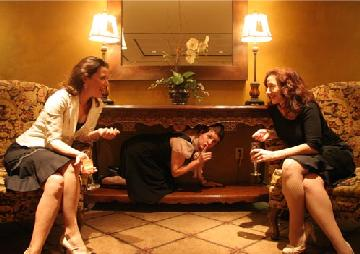

photo courtesy Switchboard
Tonight at their weekly show Proctor, ColdTowne welcomes special guests Debra Downing-Grosz, Rebecca Sohn, and Jean Villepique, collectively know as Switchboard. These talented Second City alumni have appeared at the iO Theater, the Upright Citizens Brigade Theater, and the Annoyance Theater. They’ve also appeared on The Office, Curb Your Enthusiasm, and 30 Rock (talk about comedy cred!).
Switchboard will also be at ColdTowne tomorrow night at 10pm.
8pm | $7-10
ColdTowne Theater
4803-B Airport Blvd. (next to I Luv Video) • Austin, TX 78751


Recent comments